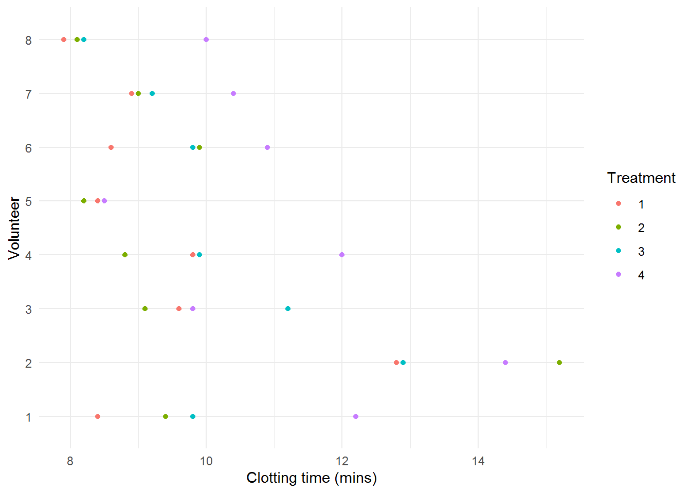
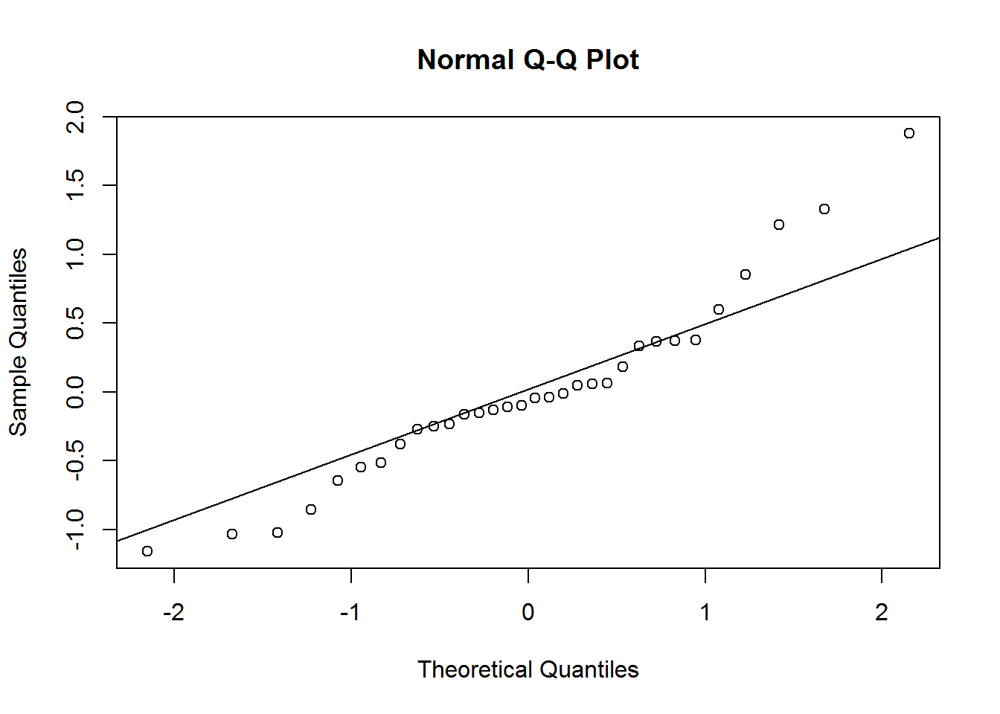
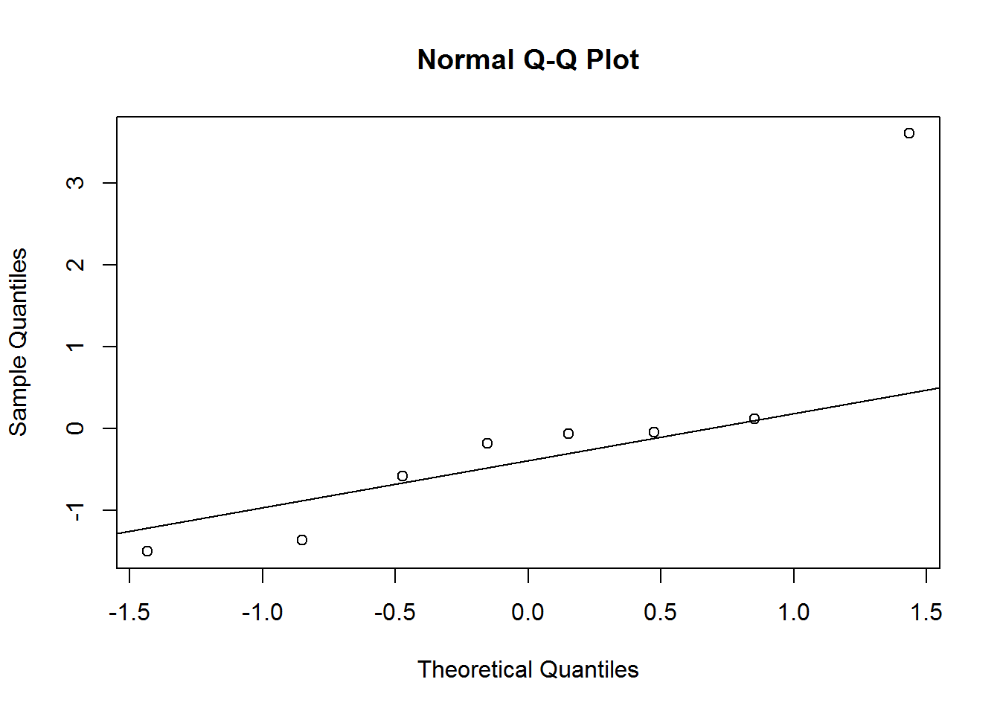
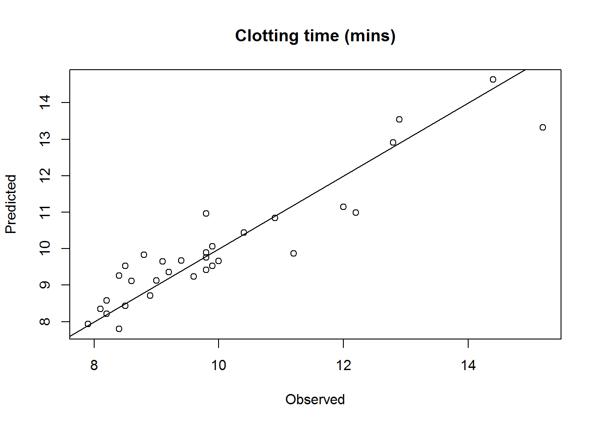
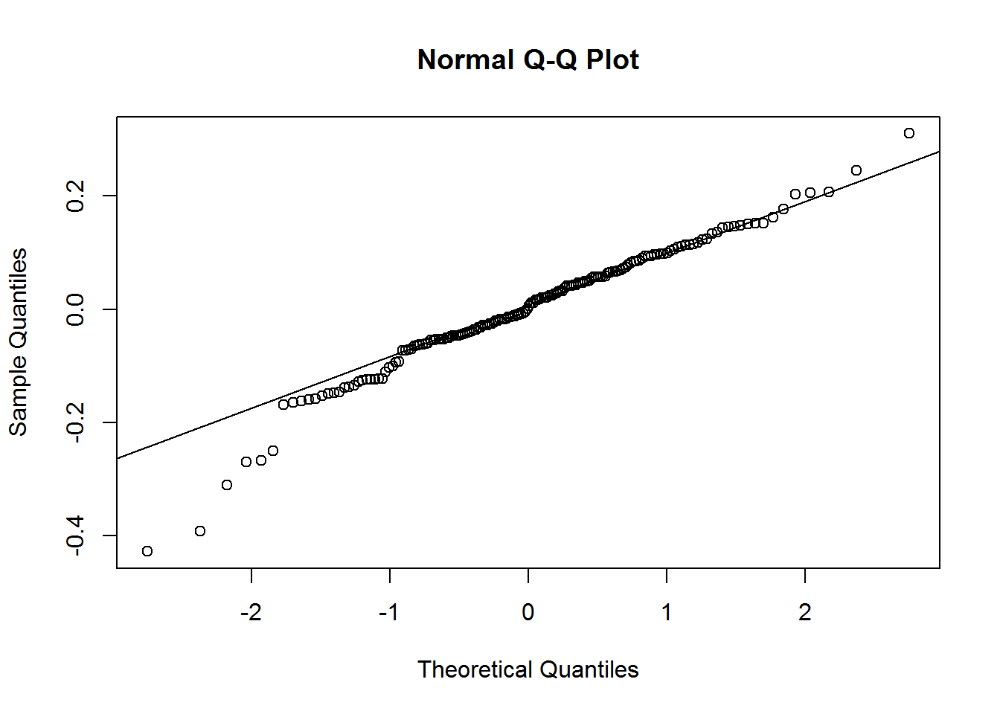
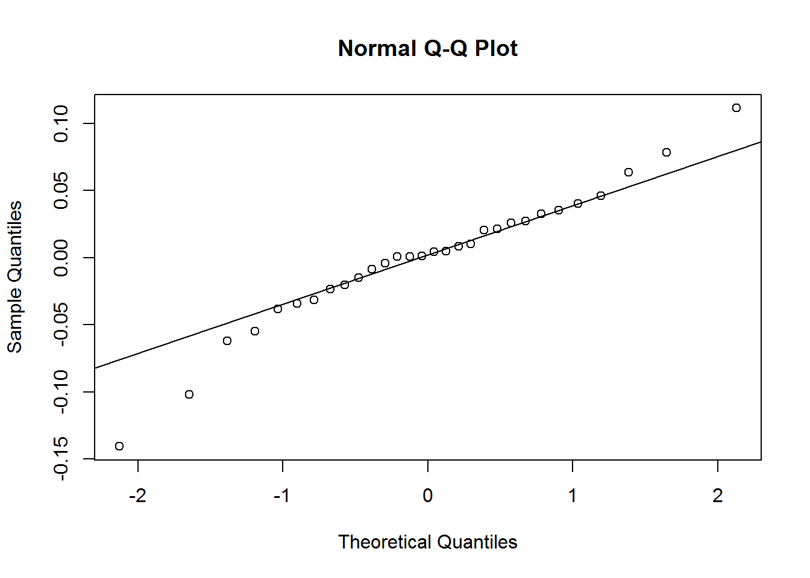

Below are the results of a randomised complete block experiment to compare the effects on the clotting time of plasma (mins) of four different methods for the treatment of plasma (material extracted from Gallagher, 2023). Samples of plasma were taken from a random sample of 8 volunteers and were subjected to all 4 treatments.
Treatment
Volunteer
1
2
3
4
1
8.4
9.4
9.8
12.2
2
12.8
15.2
12.9
14.4
3
9.6
9.1
11.2
9.8
4
9.8
8.8
9.9
12.0
5
8.4
8.2
8.5
8.5
6
8.6
9.9
9.8
10.9
7
8.9
9.0
9.2
10.4
8
7.9
8.1
8.2
10.0
1. Load the data intored in the Plasma.txt file, convert Volunteer and Treatment variables to factor, and make a descriptive plot to visualize differences between treatments and/or subjects.
We can make a descriptive plot of the data using the ggplot2 package
library(ggplot2)ggplot(Plasma, aes(x=Clotting, y=Volunteer, color=Treatment)) +geom_point() +labs(x="Clotting time (mins)", y="Volunteer") +theme_minimal()

We observe systematic differences between subjects and treatments.
2. Which variable should be included as a fixed effect, and which as a random effect? Make a design plot to visually compare the magnitude of the effects of the Treatment and Volunteer factors.
We want to compare these particular types of treatments (experimental factor), so we use fixed effects for the Treatment factor.
The eight subjects represents a sample from the population about which we wish to make inferences (random factor), so we use random effects to model the Volunteer factor.
## Fit the models ##library(lme4)plasma.null <-lm(Clotting ~-1+ Treatment, data=Plasma)plasma.lmer <-lmer(Clotting ~-1+ Treatment + (1|Volunteer), data=Plasma)## LRT for the variance component sigma2_u ##LRT <--2*(logLik(plasma.null,REML=T)-logLik(plasma.lmer,REML=T))mean(1-pchisq(LRT,df=c(0,1)))
[1] 2.290542e-07
## We can also use the AIC/BIC to compare the models ##Models <-list(plasma.null=plasma.null, plasma.lmer=plasma.lmer)cbind(AIC=lapply(Models, AIC), BIC=lapply(Models, BIC))
res <-resid(plasma.lmer, type="pearson")qqnorm(res)qqline(res)

shapiro.test(res)
Shapiro-Wilk normality test
data: res
W = 0.94578, p-value = 0.1093
We observe that the residuals are centred at zero and normally distributed, but there seems to be a lack of constant variance in the residuals (heterocedasticy).
b) Assessing assumptions on the random-effects
u <-unlist(ranef(plasma.lmer)$Volunteer)qqnorm(u)qqline(u)

shapiro.test(u)
Shapiro-Wilk normality test
data: u
W = 0.76565, p-value = 0.01215
Again, the are some issues with the assumptions for the random effects.
7. Examine the model results (estimated fixed effects and variance components). Compute and interpret the intra-class correlation coefficient. Compute the predicted random effects and fitted values.
a) Estimated fixed effects and 95% confidence intervals
Intra-class correlation coefficient: \(\rho=\frac{\sigma^2_u}{\sigma^2_u+\sigma^2} = \frac{1.63^2}{1.63^2+0.81^2}=0.802\). Which means that 80.1% of the overall variability can be attributed to the differences between the individuals.
c) Compute the predicted random effects and fitted values
plot(plasma.fitted$Clotting, plasma.fitted$Clotting.fit,xlab="Observed", ylab="Predicted", main="Clotting time (mins)")lines(c(0,20), c(0,20))

Exercise 2: spider data
Oxbrough et al. (2005) investigated how spider communities change over forestation cycles in conifer and broadleaf plantations. They identified environmental and structural features of the habitat than can be used as indicators of spider biodiversity. Different plots were surveyed, each comprising 5 to 7 sampling sites separated by a minimum of 50 metres. More than 100 species of spiders were observed.
The Spiders.txt file contains some of the data recorded from the original study (material extracted from Zuur et al., 2013). We are interested in analyzing the relationship between the spider diversity in each site with some environmental explanatory variables. The data set contains the following variables:
DivIndex: Variable of interest. Lower values of this index indicates less abundance of different species.
HerbLayer: Percentage of Herb Layer Cover
Litter: Percentage of Litter Content
GroundVeg: Percentage of Ground Vegetation
Plot: Factor indicating the surveyed plot.
1. Load the data intored in the Spiders.txt file and convert Plot variable to factor. Make descriptive graphs to visualize relationships between the variable of interest and the explanatory variables, taking into account the Plot factor.
4. Fit the final linear mixed model and write its equation
We fit the following linear mixed model \[y_{ij} = \beta_0 + \beta_1 \times HerbLayer_{ij} + \beta_2 \times Litter_{ij} + u_i + \epsilon_{ij}\]\[u_i \sim N(0,\sigma^2_u), \quad \epsilon_{ij} \sim N(0,\sigma^2)\] where
\(y_{ij}\) is the diversity index at site \(j\) in plot \(i\)
\(\beta_0\) is a global intercept
\(\beta_1\) and \(\beta_2\) are regression coefficients associated with the continuous covariates HerbLayer and Litter, respectively
\(u_i\) is a random variable associated with the \(i\)-th surveyed plot
\(\epsilon_{ij}\) are independent random errors
Model <-lmer(DivIndex ~1+ HerbLayer + Litter + (1|Plot), data=Spiders)summary(Model)
Linear mixed model fit by REML ['lmerMod']
Formula: DivIndex ~ 1 + HerbLayer + Litter + (1 | Plot)
Data: Spiders
REML criterion at convergence: -201.3
Scaled residuals:
Min 1Q Median 3Q Max
-3.6298 -0.4518 0.0329 0.5959 2.6373
Random effects:
Groups Name Variance Std.Dev.
Plot (Intercept) 0.004145 0.06438
Residual 0.013854 0.11770
Number of obs: 168, groups: Plot, 30
Fixed effects:
Estimate Std. Error t value
(Intercept) 0.93674 0.01994 46.985
HerbLayer 0.16628 0.04301 3.866
Litter -0.22189 0.07077 -3.135
Correlation of Fixed Effects:
(Intr) HrbLyr
HerbLayer -0.609
Litter -0.278 0.026
5. Verify whether the model assumptions are satisfied.
a) Assessing assumptions on the within-group errors
res <-resid(Model, type="pearson")qqnorm(res)qqline(res)

shapiro.test(res)
Shapiro-Wilk normality test
data: res
W = 0.96873, p-value = 0.0007681
b) Assessing assumptions on the random effects
u <-unlist(ranef(Model)$Plot)qqnorm(u)qqline(u)

shapiro.test(u)
Shapiro-Wilk normality test
data: u
W = 0.96304, p-value = 0.3695
6. Examine the model results (estimated fixed effects and variance components). Compute and interpret the intra-class correlation coefficient. Make a plot of observed vs predicted diversity index values.
a) Estimated fixed effects and 95% confidence intervals
Intra-class correlation coefficient: \(\rho=\frac{\sigma^2_u}{\sigma^2_u+\sigma^2} = \frac{0.0644^2}{0.0644^2+0.1177^2}=0.23\). Which means that only 23% of the overall variability can be attributed to the differences between the surveyed plots.
c) Compare observed and predicted diversity index values
Exercise 3: split-plot experiment on varieties of oats
These data have been introduced by Yates (1935) as an example of a split-plot design (material extracted from Durban, 2014). The experimental units were arranged into six block using a \(3 \times 4\) full factorial design, with three varieties of oats and four nitrogen concentrations. The term full factorial means that every variety was used with every nitrogen concentration.
Block Variety nitro yield
1 I Victory 0.0 111
2 I Victory 0.2 130
3 I Victory 0.4 157
4 I Victory 0.6 174
5 I Golden Rain 0.0 117
6 I Golden Rain 0.2 114
7 I Golden Rain 0.4 161
8 I Golden Rain 0.6 141
9 I Marvellous 0.0 105
10 I Marvellous 0.2 140
11 I Marvellous 0.4 118
12 I Marvellous 0.6 156